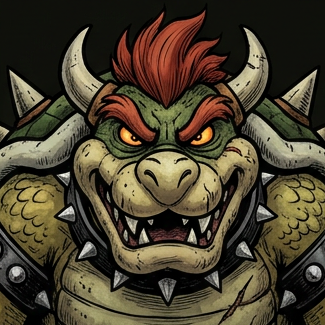
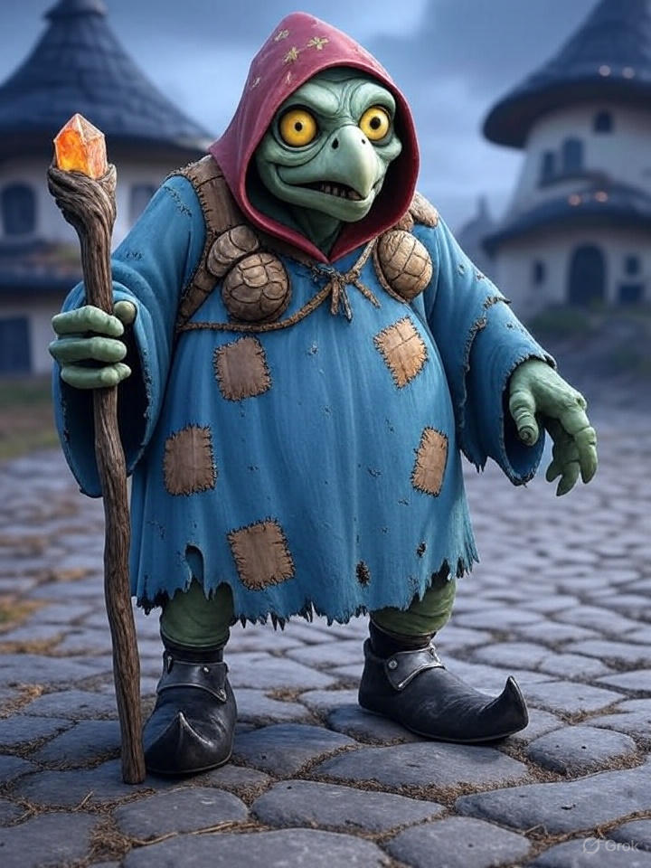

The Koopa Troop
"Strength Through Unity, Victory Through Power"
Empire Overview
Current Crisis: Leadership Vacuum
With King Bowser's prolonged absence, the Koopa Empire faces its greatest internal challenge in decades. Kamek struggles to maintain order while the Koopalings vie for influence. The ongoing conflict with the Mushroom Kingdom has entered a critical phase.
Background
The Koopa Troop stands as the dominant military force in the Darklands and surrounding territories. For generations, the Kingdom has been ruled by the Koopa dynasty, with King Bowser being the current—and most aggressive—ruler in recorded history.
What began as a territorial dispute with the Mushroom Kingdom has evolved into a multi-generational conflict driven by resource scarcity, ideological differences, and personal vendettas. The Koopa Troop's military doctrine emphasizes overwhelming force and tactical flexibility.
Strategic Objectives
Primary: Maintain territorial integrity during the leadership transition while continuing pressure on Mushroom Kingdom borders.
Secondary: Locate and recover King Bowser. Suppress internal dissent among the Koopalings. Secure resource pipelines from contested zones.
Long-term: Complete conquest of the Mushroom Kingdom. Establish Koopa dominance across all known territories.
Current Strengths
• Largest standing army in the known world
• Unmatched magical resources through Magikoopa corps
• Control of critical Warp Pipe networks
• Industrial capacity in Bowser's Castle complex
• Fearsome reputation and psychological warfare advantage
Chain of Command

King Bowser Koopa
The undisputed ruler of the Koopa Kingdom. His current whereabouts are unknown, triggering the ongoing succession crisis.

Kamek
The ancient Magikoopa who raised Bowser from infancy. Now bears the burden of holding the empire together in his king's absence.

Bowser Jr.
Bowser's only legitimate heir. Young but ambitious, he lacks the experience to command but possesses his father's ferocity.

Kammy Koopa
Senior member of the Magikoopa council. Provides magical support and counsel to Kamek during the crisis.
Kamek's Burden
For the first time in his centuries-long life, Kamek finds himself not as advisor but as ruler. The weight of the entire Koopa Empire rests on his wizened shoulders. His challenges are numerous:
Legitimacy: While respected, Kamek is not of royal blood. Some generals question whether a Magikoopa should command the military.
The Koopalings: Each of the seven believes they have a claim to power. Kamek must balance their egos while preventing outright civil war.
The War: The conflict with the Mushroom Kingdom cannot pause. Kamek must prosecute a war he never wanted while searching for his missing king.
The Search: Every resource spent looking for Bowser is a resource not spent defending the realm. Yet abandoning the search would be unthinkable.
Military Forces
Ground Forces
- Goomba Infantry 15,000 Ready
- Koopa Troopa Regulars 8,000 Deployed
- Hammer Bros Elite 2,500 Ready
- Dry Bones Legion 5,000 Deployed
- Chain Chomp Units 800 Recovering
Airborne & Special
- Paratroopa Wings 3,000 Ready
- Lakitu Cloud Corps 1,200 Deployed
- Magikoopa Battlemages 500 Ready
- Airship Fleet 24 ships Ready
- Boo Infiltrators Unknown Deployed
Strategic Deployment Map
Current Deployments
Eastern Front: 40% of forces concentrated along the Mushroom Kingdom border. Engaged in active operations against Peach Loyalist positions.
Northern Garrison: 25% maintaining defensive positions against potential incursions from the Beanbean Kingdom.
Home Defense: 20% protecting Bowser's Castle and critical infrastructure.
Reserve: 15% held in strategic reserve, available for rapid deployment.
The Mushroom Kingdom Civil War
Koopa Perspective on the Conflict
The Koopa Troop views the conflict not as aggression but as rightful expansion into territories that belong to them by ancient claim. The Mushroom Kingdom, they argue, was built on lands stolen from Koopa ancestors during the Great Displacement centuries ago.
King Bowser's personal vendetta against Princess Peach complicates the strategic picture. What could be a calculated territorial war has become entangled with the King's obsession, leading to costly and sometimes irrational military decisions.
With Bowser missing, Kamek has attempted to impose more rational military strategy—but changing course mid-war is proving difficult, especially with the Koopalings each pushing their own agendas.
War Timeline
With Bowser missing, the war has entered an uncertain phase. Kamek attempts to maintain offensive pressure while dealing with internal power struggles. The Peach Loyalists sense weakness.
OngoingA major amphibious assault on Toad Harbor ended in catastrophic failure when Mario intervened. Three airships lost, 2,000 casualties. Bowser disappeared during the retreat.
Major DefeatLudwig's forces successfully captured the strategically vital fortress, securing the eastern approach to World 5. A rare unqualified victory.
VictoryAttempted seizure of the Star Road access points. Initial success followed by a devastating counterattack. Heavy losses on both sides.
StalemateSuccessful annexation of three border territories. Established the current front lines. Marked the high point of Koopa territorial gains.
Strategic VictoryForeign Relations
 Mushroom Kingdom (Peach Loyalists)
At War
Mushroom Kingdom (Peach Loyalists)
At War
The primary enemy. The Koopa Troop has been locked in conflict with the Mushroom Kingdom for generations, though the current war is the most intense in living memory.
With Peach maintaining strong alliances and the Mario Brothers as her champions, the Kingdom has proven surprisingly resilient despite being outmatched in raw military power.
 Beanbean Kingdom
Hostile
Beanbean Kingdom
Hostile
Relations soured after the Cackletta incident. While not actively at war, border tensions remain high. The Beanbean Kingdom maintains a defensive alliance with the Mushroom Kingdom.
Kamek has attempted diplomatic overtures, but Queen Bean remains distrustful of Koopa intentions.
 Sarasaland
Neutral
Sarasaland
Neutral
Princess Daisy maintains strict neutrality in the Koopa-Mushroom conflict, despite her personal friendship with Peach. Trade relations continue, providing the Koopa Troop with resources otherwise unavailable.
Kamek values this neutrality and has issued orders to avoid any provocation of Sarasaland interests.
 Wario Incorporated
Transactional
Wario Incorporated
Transactional
Wario's mercenary organization maintains profitable business relationships with the Koopa Troop. Weapons, intelligence, and occasionally personnel are exchanged for gold.
While not a formal alliance, Wario's willingness to work with anyone paying makes him a valuable—if unreliable—asset.
 King Boo's Court
Allied
King Boo's Court
Allied
The spectral kingdom of King Boo maintains close ties with the Koopa Troop. Boo forces serve as invaluable scouts, infiltrators, and psychological warfare specialists.
King Boo's personal hatred of Luigi makes him a reliable ally against the Mario Brothers specifically.
 Smithy Gang Remnants
Hostile
Smithy Gang Remnants
Hostile
The mechanical forces that once invaded from another dimension were defeated through an unlikely Koopa-Mushroom alliance. Remnant factions still operate in remote areas.
Both kingdoms maintain standing orders to destroy Smithy forces on sight—one of the few things they agree on.
Territorial Holdings
Bowser's Castle Complex
ControlledThe heart of the Koopa Empire. A massive fortress complex built over centuries, containing the seat of power, primary military command, and the royal treasury.
Dark Land
ControlledThe ancestral homeland of the Koopa species. Volcanic terrain rich in mineral resources. Home to the largest Koopa population centers.
World 4 (Giant Land)
ControlledTerritory of massive flora and fauna. Provides unique biological resources and houses specialized Giant Goomba breeding facilities.
Pipe Land (World 7)
ContestedCritical warp pipe network hub. Currently under dispute with Mushroom Kingdom forces controlling several key junctions.
Sky Land (World 5)
ContestedFloating island territory. Essential for airship operations and Lakitu training. Currently divided between Koopa and Mushroom control.
Ice Land (World 6)
ControlledFrozen territory under Lemmy's governance. Harsh conditions limit its strategic value, but provides natural defensive buffer.
The Koopalings
The seven Koopalings serve as Bowser's elite lieutenants, each commanding their own forces and territories. With Bowser missing, tensions between them have escalated as each jockeys for position in a potential succession.


Koopaling Power Dynamics
Ludwig von Koopa considers himself the rightful heir due to his seniority and tactical brilliance. He commands the most respect among the military brass and has been openly critical of Kamek's "soft" approach to the war.
Roy Koopa believes might makes right and has begun consolidating forces loyal to him personally rather than the crown. His ambitions worry Kamek greatly.
Wendy O. Koopa has been quietly building alliances with external powers, including secret communications with Sarasaland. Her long-term goals remain unclear.
Iggy Koopa remains focused on his research, seemingly uninterested in power—but his weapons development gives him leverage no one can ignore.
Lemmy, Morton, and Larry have thus far remained loyal to Kamek's regency, though their patience wears thin as Bowser's absence extends.
Succession Crisis
Internal Threat Assessment
Intelligence suggests that if Bowser is not found within 30 days, Ludwig and Roy may move against each other openly. Kamek has positioned loyalist forces at key chokepoints, but a civil war within the civil war would be catastrophic for Koopa interests.
Bowser Jr., the legitimate heir, lacks the experience and respect needed to unite the Koopalings. Several have privately expressed that they will not take orders from "the brat."
Current Operations
Operation: King's Return
ActivePriority mission to locate and recover King Bowser. Multiple Magikoopa scrying teams deployed. Boo infiltrators searching Mushroom Kingdom territory for signs of capture or imprisonment.
- Deploy scrying network across all known territories
- Confirm Bowser not held in Peach's Castle
- Investigate dimensional anomalies near last sighting
- Interrogate captured Toad officers for intelligence
Operation: Iron Shell
ActiveDefensive consolidation of the eastern front following the Toad Harbor disaster. Focus on fortifying current positions rather than aggressive expansion.
- Reinforce World 4-4 garrison
- Establish fallback positions at World 3 border
- Deploy additional Bullet Bill batteries
- Complete warp pipe denial operations
Operation: Shadow Watch
ActiveCounter-intelligence operation monitoring the Koopalings for signs of rebellion or unauthorized actions. Kamek's personal initiative, known only to his most trusted Magikoopas.
- Place observers in each Koopaling's command staff
- Monitor all long-range magical communications
- Identify potential loyalist officers for emergency deployment
- Develop contingency plans for each succession scenario
Operation: Pipe Dream
PlanningProposed offensive to seize control of the remaining Pipe Land warp junctions. Ludwig is pushing for immediate execution; Kamek urges caution until Bowser's status is confirmed.
- Complete reconnaissance of Mushroom defensive positions
- Amass strike force of 5,000 troops
- Coordinate airship support from Sky Land bases
- Obtain Kamek's authorization for launch
Operation: Starfall
SuspendedAmbitious plan to capture Star Road access points and control the flow of Power Stars. Suspended indefinitely after the initial assault's failure six months ago.
- Identify Star Road entry points
- Secure initial foothold (FAILED)
- Establish permanent garrison
- Begin Star harvesting operations
Intelligence Reports
Boo reconnaissance reports Mario and Luigi departing Toad Town heading northeast. Destination unknown. All eastern garrisons on high alert. This could be a rescue mission for Bowser if they know something we don't.
Roy Koopa has repositioned 800 troops from his border garrison to positions closer to Dark Land's interior. When questioned, he claimed "defensive restructuring." Kamek is not convinced. Recommend increased surveillance.
Toad Brigade has received reinforcements from Beanbean Kingdom. Estimated 2,000 Bean troops now integrated into Mushroom defensive lines at World 5 border. This confirms the defensive alliance is more than symbolic.
[CLASSIFIED - KAMEK EYES ONLY] Intercepted magical transmission from Wendy O. Koopa to unknown recipient in Sarasaland. Contents encrypted with unknown cipher. Magikoopa cryptanalysis team working on decryption. Potential treason investigation pending.
Magikoopa sensors detected unusual dimensional disturbance near Bowser's last known position at Toad Harbor. Signature consistent with forced interdimensional transport. Possibility that Bowser was not killed but displaced to another realm.
Latest weapons shipment from Wario Incorporated arrived at Dark Land port. Inventory includes 500 Bob-omb units, 200 Bullet Bill launchers, and experimental "Gold Flower" devices. Payment of 50,000 coins transferred.